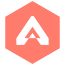
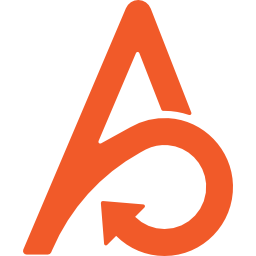

Planning and task tracking tools for coding agents
Planning boards and task trackers that coding agents can read and update. Of the 691 tools on our writing code page, 34 fit this narrower job. By pricing: 23 open source, 5 free or freemium, 5 paid, usage-based or enterprise, 1 pricing on the maker's site. The most-starred open repos here are Agent Skills (Addy Osmani) (114,397 stars), Gemini CLI (108,626 stars), Archify (94,965 stars). Most come from the coding (20), app builders (4), MCP servers (2) categories.
Updated
Agent Skills (Addy Osmani)
Agent Skills by Addy Osmani packages senior-engineer workflows and quality gates as skills for AI coding agents, with nine slash commands such as /spec, /plan, /build, /test, /review and /ship that walk an agent from idea to production with tests and review at each step.
Added
Gemini CLI
Gemini CLI is Google's Apache-2.0 open-source terminal agent that brings Gemini models into your shell to read code, edit files and run commands. As of June 18, 2026 it is aimed at Gemini Code Assist Standard/Enterprise and Code Assist for GitHub users; free individual access and Google AI Pro/Ultra plans moved to Antigravity CLI, and the project says it is not tuned for the Gemini 4 series.
Added
Archify
Archify is an Apache-2.0 agent skill for Cursor, Claude Code, Codex CLI and OpenCode that turns an idea, plan or whole codebase into an interactive HTML diagram you can explore, follow source links through and share, from repository maps to learning paths and travel plans.
Added
Oh My OpenAgent (OmO)
Agent harness add-on (OmO) for OpenCode and Pi that runs multi-model coding agent teams with memory, planning and parallel workflows.
Added
Vibe Kanban
Kanban board for planning and running tasks with Claude Code, Codex and other coding agents.
Added
Beads
Issue-tracking memory for coding agents so they can keep track of long-running work.
Added
Planning With Files
File-based planning for coding agents, keeping Markdown plans that survive crashes and session resets.
Added
agenticSeek
Fully local autonomous agent that browses, codes and plans without paid APIs.
Added
Agent Orchestrator
Runs and supervises teams of coding agents from planning to merge.
Added
GSD Core
GSD Core is a spec-driven development and context-engineering framework that runs Claude Code, Codex, Cursor, Copilot and other coding agents through a discuss, plan, execute, verify and ship loop, doing heavy research and execution in fresh-context subagents to avoid context rot.
Added
Plannotator
Visually annotate and review coding-agent plans and diffs, then send feedback back to the agent.
Added
Backlog.md
Markdown task board in your Git repo for coordinating work between people and AI agents.
Added
Raven
Host agent that plans complex jobs as task graphs and coordinates built-in and third-party agents for research, coding, design and on-call work.
Added
LazyCodex
Agent harness for Codex that adds project memory, planning, execution and verified completion for complex codebases.
Added
Agent Teams
Free desktop app where teams of AI agents take tasks from a kanban board, message each other and review each other's work.
Added
Nexting
Nexting is a remote control for the coding agents on your own Mac or Windows PC: view live Claude Code, Codex, Grok or Cursor sessions, send tasks and drive them from the iPhone app or a $129 wearable PIN, with an open-source devices SDK and an optional $29/month Plus plan.
Added
Nimbalyst
Visual workspace for working with coding agents like Claude Code on docs, code and plans.
Added
Oh My Agent
A specialist team for the coding agent you already use: 12 roles, 21 workflows and 33 skills that plan, build in parallel, review and debug, leaving plans, ADRs and results as files. Gates wait for your own tests.
Added
Chorus
Chorus is an agent harness for AI-human collaboration inspired by AI-DLC, with kanban-style control for Claude Code sessions.
Added
Spark-X2.6
Spark-X2.6 is a pair of compact 4B and 1.7B open-weight language models built for on-device agents, sharing Spark-X2.5's architecture but with new post-training that improves tool use, multi-step planning, coding, long context and multilingual tasks. Apache-2.0.
Added
Foremerge
Foremerge is an open-source coordination layer for teams of coding agents, built on top of Git. Each agent keeps its own worktree, but they share what they intend to change, claim the parts of the code they are working on and verify each other's change sets, so conflicting plans are caught before they turn into merge conflicts. It also works over MCP.
Added

Aura Autopilot
Open-source, continually learning playtesting agent from Ramen, the team behind the Aura game-dev assistant. Installed as a plugin in Unreal Engine 5, Unity 6 or Godot 4 on Windows and macOS, it reads your project's source, writes a bespoke harness for a real-time decision model, then plays the game with real keyboard and mouse input to explore levels, test features, verify fixes or pursue goals such as 'kill 10 enemies', and files a report with what broke. Per-game memory makes it faster each run; works with an Aura plan, BYOK keys, or Claude Code and Codex via its skills and MCP server. Apache-2.0.
Added
Mixdog
Mixdog is an open-source agent project that helps builders handle desktop coding agent where a lead model plans and cheaper models handle.
Added
1Password for Agents
1Password for Agents lets personal AI agents sign in to your accounts without ever seeing your passwords or one-time codes. When a supported agent reaches a sign-in page, it asks for a credential from your vault; you approve the request, and 1Password fills it straight into the site, so the secret never enters the model or its memory. You can see and manage which agents have access to what. It launched with integrations for agents such as Claude Duet, ChatGPT Work and dots, Meta's Muse and Grok Bot, and needs a 1Password plan.
Added

Agiloop
Agiloop is an AI-orchestrated software development platform that connects product requirements, architecture planning, AI coding, testing and production insights in one continuous loop, including a free Code Health and Readiness Assessment for existing repositories.
Added
Artil
Artil gives each AI agent its own identity: a real email inbox on Artil's domain or yours, a dedicated US or UK SMS number on the Pro plan, and credential storage for API keys, tokens and 2FA codes it can save from a QR code. Agents use the artil CLI or MCP server to send and read email and texts, sign up for services, handle verification codes and message teammates and other agents on Slack, Telegram and email from one team directory, and Claude Code sessions can be woken by incoming messages. Works with ChatGPT, Claude, Claude Code, Codex, Hermes, OpenClaw and any MCP client; free to start.
Added
Emergent
Vibe-coding platform where AI agents plan, build and deploy full web and mobile apps through a chat conversation.
Added
Empyre
Empyre turns a plain-language business brief into a running software company: eight AI agents (CEO, CTO, CMO, CFO and more) build it, deploy it to its own HTTPS address and keep operating it, shipping code, marketing and support with spend approval; plans $49, $149 and $299 a month.
Added
Massvai
Massvai is an AI full-stack app builder for Next.js, TypeScript, Tailwind CSS and Supabase. From a plain-language prompt or reference screenshot, its coding agent plans the architecture, writes exportable TypeScript code with a live HMR preview, wires Supabase authentication and database flows, syncs the repository to GitHub and deploys to Vercel.
Added
Modurian
Modurian is a multi-agent AI workspace that plans, writes code, previews live and deploys web apps from an idea to a production URL.
Added
Ploutos
Ploutos is an AI community manager for Discord servers that welcomes new members, answers repeat questions, handles tickets and escalates to humans when needed, with a human team supervising it around the clock; plans start at $7.99 a month plus a one-time setup fee.
Added
QodFlow
QodFlow is an MCP server that gives agents a way to handle shared kanban board with SLA tracking: AI agents claim jobs, report progress.
Added
TestChimp
TestChimp is an MCP server that gives agents a way to handle QA platform for agents: coverage signals, in-repo test plans, verified tests.
Added
Verdent
AI coding agent that plans, codes and verifies tasks in parallel.
Added
GitHub repos (25)
| Repo | GitHub stars | Licence | Last push |
|---|---|---|---|
| 114,397 | MIT | — | |
| 108,626 | Apache License 2.0 | 2026-10-29 | |
| Archify ↗ | 94,965 | Apache License 2.0 | — |
| Oh My OpenAgent (OmO) ↗ | 70,496 | Sustainable Use License 1.0 (not an OSI licence) | 2026-10-30 |
| Vibe Kanban ↗ | 28,519 | Apache License 2.0 | 2026-10-28 |
| Beads ↗ | 28,303 | MIT | 2026-10-30 |
| Planning With Files ↗ | 27,769 | MIT | 2026-10-28 |
| agenticSeek ↗ | 27,578 | GNU GPL v3.0 | 2026-10-22 |
| Agent Orchestrator ↗ | 13,908 | Apache License 2.0 | 2026-10-30 |
| GSD Core ↗ | 11,346 | — | — |
| Plannotator ↗ | 9,780 | Apache License 2.0 | 2026-10-30 |
| Backlog.md ↗ | 7,208 | MIT | 2026-10-29 |
| Raven ↗ | 5,914 | — | 2026-10-30 |
| LazyCodex ↗ | 3,853 | MIT | 2026-10-28 |
| Agent Teams ↗ | 2,371 | AGPL-3.0 | 2026-10-29 |
Top 15 of 25 by stars. Stars and licence come from each repo, checked when the listing was last verified.
FAQ
What are the best AI tools for writing code focused on planning and task tracking?
We list 34. The first three by GitHub stars and featured status are Agent Skills (Addy Osmani): Agent Skills by Addy Osmani packages senior-engineer workflows and quality gates as skills for AI coding agents, with nine slash commands such as /spec, /plan, /build, /test, /review and /ship that walk an agent from idea to production with tests and review at each step.; Gemini CLI: Gemini CLI is Google's Apache-2.0 open-source terminal agent that brings Gemini models into your shell to read code, edit files and run commands. As of June 18, 2026 it is aimed at Gemini Code Assist Standard/Enterprise and Code Assist for GitHub users; free individual access and Google AI Pro/Ultra plans moved to Antigravity CLI, and the project says it is not tuned for the Gemini 4 series.; Archify: Archify is an Apache-2.0 agent skill for Cursor, Claude Code, Codex CLI and OpenCode that turns an idea, plan or whole codebase into an interactive HTML diagram you can explore, follow source links through and share, from repository maps to learning paths and travel plans.
Are there free or open-source options?
Yes: 23 open source, 5 free or freemium, 5 paid, usage-based or enterprise, 1 pricing on the maker's site. Pricing is as each maker states it.
More from writing code
Tools are grouped by what each says it does. Missing one? Submit it free.